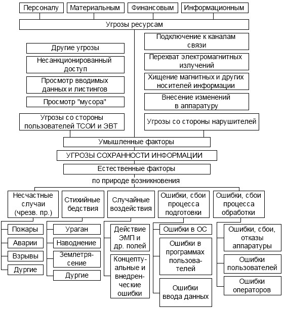

Согласно Закону о безопасности подугрозой безопасностипонимаетсясовокупность условий и факторов, создающих опасность жизненно важным интересам личности, общества и государства. Концепция национальной безопасности РФ не дает определения угрозы, но называет некоторые из них в информационной сфере. Так, опасность представляют:
– стремление ряда стран к доминированию в мировом информационном пространстве;
– вытеснение государства с внутреннего и внешнего информационного рынка;
– разработка рядом государств концепции информационных войн;
– нарушение нормального функционирования информационных систем;
– нарушение сохранности информационных ресурсов, получениенесанкционированного доступа к ним.
Это так называемыевнешние угрозы, которые обусловленыконкурентным характером развития межгосударственных и международных отношений. Соответственно существуют ивнутренние угрозы, связанные во многом снедостаточным проведением экономических, социально-политических и иных преобразований в сфереИБ. Концепция национальной безопасности называет их в качестве предпосылок возникновения угроз. С учетом этих предпосылок, по нашему мнению, к источникам внутренних угроз можно отнести:
– отставание России в сфере информатизации органов государственной власти;
– несовершенство системы организации государственной власти по формированию и реализации единой государственной политики обеспечения ИБ;
– криминализацию общественных отношений, рост организованной преступности;
– увеличение масштабов терроризма;
– обострение межнациональных и осложнение внешних отношений.
Для нейтрализации информационных угроз существует исторически сложившаяся система сохранения государственной тайны, включающая подсистемы:
– криптографической сети конфиденциальной связи;
– противодействия иностранным техническим разведкам;
– обеспечения режима секретности на закрытых государственныхобъектах.
Наряду с традиционными приоритетами иностранных технических разведок в сферу их интересов все в большей мере вовлекаются вопросы технологий, финансов, торговли, ресурсов, доступ к которым открывается в связи с конверсией, развитием международных интеграционных процессов, широким внедрением компьютерных технологий. Из существующих информационных угроз наиболее актуальными являются угрозы экономической безопасности предприятий и фирм, определяемые недобросовестной конкуренцией, экономическим и промышленным шпионажем. Промышленный шпионаж существовал всегда.
Промышленный шпионаж представляет собой
несанкционированную передачу конфиденциальной технологии, материалов, продукции, информации о них.
Методыи способы ведения шпионажа остаются неизменными на протяжении многих столетий развития общества и государства. При этом меняются только средства и формы его ведения. К таким методам относятся: подкуп, шантаж, деятельность послов-шпионов, перехват сообщений, представленных на различных носителях (магнитные носители, письма и др.).
Что касаетсяанализа полученной информации, то все осталось без изменений. Им занимается человек или группа людей, осуществляющих аналитико-синтетическую переработку информации, в том числе с использованием новых информационных технологий.
Развитие техники вплоть до начала ХХ в. не влияло на средства несанкционированного получения информации: сверлили дырки в стенах и потолках, использовали потайные ходы и полупрозрачные зеркала, устраивались у замочных скважин и под окнами. Появление телеграфа и телефона позволило использовать технические средства получения информации. Гигантское количество сообщений стало перехватываться, влияя на ведение войн и положение на бирже. В 30– 40 гг. появились диктофоны, миниатюрные фотоаппараты, различные радиомикрофоны.
Развитие новых информационных технологий позволило осуществлять перехват гигантского количества сообщений, оказывая влияние на все сферы социально-экономического развития общества, в том числе на развитие промышленности.
Анализ результатов исследований угроз информации позволяет утверждать, что одной из основных угроз государственной безопасности Российской Федерации являются попытки западных спецслужб добыватьконфиденциальные сведения, составляющие государственную, промышленную, банковскую и другие виды тайн. Ведущие западные страны продолжают модернизировать и развивать свои разведывательные службы, совершенствовать техническую разведку, наращивать ее возможности.
С учетом рассмотренного содержания понятия угрозы государству, обществу и личности в широком смысле рассмотрим угрозы, непосредственно воздействующие на обрабатываемую конфиденциальную информацию. Система угроз безопасности представляет собой реальные или потенциально возможные действия или условия, приводящие к хищению, искажению, несанкционированному доступу, копированию, модификации, изменению, уничтожению конфиденциальной информации и сведений о самой системе и, соответственно, к прямым материальным убыткам.
При этом угрозы сохранности информации определяются случайными и преднамеренными разрушающими и искажающими воздействиями внешней среды, надежностью функционирования средств обработки информации, а также преднамеренного корыстного воздействия несанкционированных пользователей, целью которых является хищение, уничтожение, разрушение, модификации и использование обрабатываемой информации. Анализ содержания свойств угроз позволяет предложить следующие варианты их классификации (рис. 1).
Проявление угроз характеризуется рядом закономерностей. Вопервых, незаконным овладением конфиденциальной информацией, ее копированием, модификацией, уничтожением в интересах злоумышленников, с целью нанесения ущерба. Кроме этого, непреднамеренные действия обслуживающего персонала и пользователей также приводят к нанесению определенного ущерба. Вовторых, основными путями реализации угроз информации и безопасности информации выступают:
– агентурные источники в органах управления и защиты информации;
– вербовка должностных лиц органов управления, организаций, предприятий и т. д.;
– перехват и несанкционированный доступ к информации с использованием технических средств разведки;
– использование преднамеренного программно-математического воздействия;
– подслушивание конфиденциальных переговоров в служебных помещениях, транспорте и других местах их ведения.

Рис. 1. Классификация угроз безопасности
Основными факторами воздействия угроз, обусловливающими информационные потери и приводящими к различным видам ущерба, возрастание убытков от неправомерных действий, являются:
– несчастные случаи, вызывающие выход из строя оборудования иинформационных ресурсов (пожары, взрывы, аварии, удары, столкновения, падения, воздействия химических или физических сред);
– поломки элементов средств обработки информации;
– последствия природных явлений (наводнения, бури, молнии, землетрясения и др.);
– кражи, преднамеренная порча материальных средств;
– аварии и выход из строя аппаратуры, программного обеспечения,баз данных;
– ошибки накопления, хранения, передачи, использования информации;
– ошибки восприятия, чтения, интерпретации содержания информации, соблюдения правил, ошибки как результат неумения, оплошности, наличие помех, сбоев и искажений отдельных элементов и знаков или сообщения;
– ошибки эксплуатации: нарушение защиты, переполнение файлов,ошибки языка управления данными, ошибки при подготовке и вводе информации, ошибки операционной системы, программирования, аппаратные ошибки, ошибки толкования инструкций, пропуск операций и др.;
– концептуальные ошибки внедрения;
– злонамеренные действия в материальной сфере;
– болтливость, разглашение; – убытки социального характера (уход, увольнение, забастовка и др.).
Информационный ущерб в ряде случаев может быть оценен в зависимости от вида потерь. Это могут быть:
–потери, связанные с компенсацией или возмещением утраченных, похищенных материальных средств, которые включают:
• стоимость компенсации возмещения другого косвенно утраченного имущества;
• стоимость ремонтно-восстановительных работ;
• расходы на анализ и исследование причин и величины ущерба;
• другие расходы;
–дополнительные расходына персонал, обслуживающий технические средства обработки конфиденциальной информации, восстановление информации, возобновление работы информационных систем по сбору, хранению, обработке, контролю данных, в том числе расходы:
• на поддержку информационных ресурсов ТСОИ;
• обслуживающий персонал, не связанный с обработкой информации;
• специальные премии, расходы на перевозку и др.;
эксплуатационные потери, связанные с ущербом банковских интересов или финансовыми издержками, потерей клиентов, заказчиков, требующие дополнительных расходов на восстановление: банковского доверия; размеров прибыли; утерянной клиентуры; доходов организации и др.;
• утрата фондов или порча имущества, не подлежащего восстановлению, которые снижают финансовые возможности (деньги, ценные бумаги, денежные переводы и др.);
• расходы и потери, связанные с возмещением морального ущерба,обучением, экспертизой и др.
Анализируя количественные данные потерь, можно сделать вывод о том, что убытки от злонамеренных действий, и особенно от экономического шпионажа, непрерывно возрастают и являются наиболее значимыми. Выводы западных экспертов показывают, что утечка 20 % коммерческой информации в 60 случаях из 100 приводит к банкротству фирмы.
Подводя итоги краткому анализу существующих угроз конфиденциальной информации, можно выделить два направления воздействия угроз, снижающих безопасность информации.
Первое, традиционно сложившееся в рамках защиты конфиденциальных сведений, представляет собойвоздействия, способствующие несанкционированному доступу к этим сведениям. Второе, сложившееся в рамках широкого понимания проблем ИБ, связано сиспользованиемсовременных технических и организационных систем, а также с участием людей, коллективов людей и общества в целом и их подверженностью внешним, негативным информационным воздействиям.
Так, теоретически доказано, а практикой многократно подтверждено то, что психика и мышление человека подвержены внешним информационным воздействиям и при их надлежащей организации возникает возможность программирования поведения человека. Более того, в последнее время ведутся разработки методов и средств компьютерного проникновения в подсознание, для того чтобы оказывать на него глубокое воздействие. Поэтому актуальной является проблема не только защиты информации, но и защиты от разрушающего воздействия информации, приобретающей международный масштаб и стратегический характер. В силу изменения концепции развития стратегических вооружений, определяющей, что вооруженное решение мировых проблем становится невозможным, все более прочно входит в обиход понятиеинформационной войны. Сейчас эффективность наступательных средств информационной войны, информационного оружия превосходит эффективность систем защиты информации.
Представляют интерес угрозы утраты охраняемых сведений в ходе информационных процессов, участники которых представляют противоположные интересы. Анализ этих угроз позволил выявить ряд их характерных признаков. В большинстве случаев активные действия сторон вполне осознанны и целенаправленны. К таким действиям относятся:
– разглашение конфиденциальной информации ее обладателем;
– утечка информации по различным, главным образом техническим, каналам;
– несанкционированный доступ к конфиденциальной информацииразличными способами.
Разглашение информации– этоумышленные или неосторожные действия должностных лиц и граждан, которым в установленном порядке были доверены соответствующие сведения по работе, приведшие к оглашению охраняемых сведений, а также передача таких сведений по открытым техническим каналам. Разглашение выражается в сообщении, передаче, предоставлении, пересылке, опубликовании, при обсуждении, утере и оглашении любыми иными способами конфиденциальной информации лицам и организациям, не имеющим права доступа к охраняемым секретам. Разглашение информации может происходить по многим каналам, в том числе через почтовые отправления, радио, телевидение, печать и т. п. Разглашение возможно в ходе деловых встреч, бесед, при обсуждении совместных работ, в договорах, в письмах и документах, деловых встречах и др. В ходе таких мероприятий партнеры ведут интенсивный обмен информацией. Именно при общении между ними устанавливаются «доверительные» отношения, приводящие к оглашению коммерческих секретов.
Как правило, факторами, способствующими разглашению конфиденциальной информации, являются:
слабое знание (или незнание) требований по защите
конфиденциальной информации;
– ошибочность действий персонала из-за низкой производственнойквалификации;
– отсутствие системы контроля за оформлением документов, подготовкой выступлений, рекламы и публикаций;
– злостное, преднамеренное невыполнение требований по защитекоммерческой тайны.
Разглашение конфиденциальной информации неизбежно приводит к материальному и моральному ущербу.
Утечку информациив общем виде можно рассматривать какбесконтрольный и неправомерный выход конфиденциальной информации за пределы организации или круга лиц, которым эта информация была доверена. При этом природа утечки охраняемой информации характеризуется как обстоятельствами происхождения, так и причинами, условиями возникновения утечки.
Неправомерному овладению конфиденциальной информацией вследствиенеудовлетворительного управления персоналомсо стороны должностных лиц, организаций и ведомств способствует наличие следующих обстоятельств:
– склонность сотрудников организации к излишней разговорчивости – 32 %;
– стремление сотрудников зарабатывать деньги любыми способамии любой ценой – 24 %;
– отсутствие в фирме службы безопасности – 14 %; – привычкасотрудников делится друг с другом информацией о своей служебной деятельности – 12 %;
– бесконтрольное использование в фирме информационных систем– 10 %;
– предпосылки возникновения конфликтных ситуаций в коллективе вследствие отсутствия психологической совместимости сотрудников, случайного подбора кадров, отсутствия работы руководителя по сплочению коллектива и др. – 8 %.
Также утечка охраняемой информации обусловлена наличием соответствующих условий, связанных:
– cпоявлением конкурента(злоумышленника), который такой информацией интересуется и затрачивает определенные силы и средства для ее приобретения;
–несовершенством норм по сохранению коммерческих секретов, а также нарушением этих норм, отступлением от правил обращения с соответствующими документами, техническими средствами, образцами продукции и другими материалами, содержащими конфиденциальную информацию;
– разными факторами и обстоятельствами, которые складываютсяв процессе научной, производственной, рекламной, издательской, информационной и иной деятельности организации и создают предпосылки дляутечки сведений, составляющих различные виды тайн.
К таким факторам и обстоятельствам могут, например, относиться:
– недостаточное знание работниками правил защиты соответствующего вида тайны и непонимание необходимости их тщательного соблюдения;
– утрата удостоверений, пропусков, ключей от режимных помещений, хранилищ, сейфов (металлических шкафов), личных печатей – 12 %;
– пронос без разрешения работников службы безопасности (СБ) натерриторию организации кино-, звуко-, фото– и видеозаписывающей, радиопередающей, принимающей и множительно-копировальной аппаратуры личного пользования; недонесение о фактах возможной утечки секретных сведений руководству подразделения и СБ; вынос с предприятия секретных документов и изделий без разрешения руководителя организации или начальника СБ – 4 %;
– неправильное определение грифа секретности документа (изделия) – 3 %;
– несвоевременное направление документов для приобщения к делу с отметками об исполнении и с резолюцией начальника подразделения; оставление открытыми и неопечатанными после окончания работы помещений (спецхранилищ) – 3 %;
– оставление секретных документов на рабочих столах при выходеиз помещения, нарушение установленного порядка ознакомления прикомандированных лиц с секретными документами и изделиями, перевозка секретных документов и изделий личным и общественным транспортом и перемещение с ними в места, не связанные с выполнением заданий, – 2 %;
неправильное оформление секретных документов в печать; несоблюдение порядка отчетности перед СБ за числящиеся за исполнителем документы и изделия при увольнении, перед уходом в отпуск, выездом в командировки; несвоевременное сообщение в кадровую службу об изменениях анкетных и автобиографических данных; ведение переговоров по секретным вопросам по незащищенным линиям связи; выполнение секретных работ на дому; снятие копий с секретных документов или производство выписок из них без письменного разрешения начальника СБ; передача и взятие без расписки секретных документов и изделий – 1 % по каждому случаю.
Причинами неправомерного овладения конфиденциальной информацией могу быть следующие обстоятельства:
–использование не аттестованных технических средствобработки конфиденциальной информации
–слабый контроль за соблюдением правил защиты информацииправовыми организационными и инженерно-техническими мерами
–текучесть кадров, в том числе владеющих сведениями, составляющими коммерческую тайну;
–нарушения, не попадающие в поле зрения администрации и СБ, – это могут быть:
• ознакомление лиц с конфиденциальными документами, изделиями, работами, не входящими в круг их служебных обязанностей;
• направление адресатам конфиденциальных документов, к которым они не имеют отношения;
• подготовка конфиденциальных документов на неучтенных носителях;
• нарушение порядка работы с конфиденциальными документами,изделиями, который не допускает обзор их посторонними лицами;
• несвоевременное сообщение в СБ данных о внеслужебных связяхс родственниками, проживающими за границей, с родственниками, выезжающими за границу на постоянное место жительства;
• посещение без разрешения руководства организации посольств,консульств, иностранных частных компаний и фирм;
• установление радиосвязи с радиолюбителями иностранных государств;
• использование конфиденциальных сведений в несекретной служебной переписке, технических заданиях, статьях, докладах и выступлениях;
• преждевременная публикация научных и других работ, которыемогут расцениваться на уровне изобретений или открытий или опубликование которых запрещено в установленном порядке;
• сообщение устно или письменно кому бы то ни было, в том числеродственникам, конфиденциальных сведений, если это не вызвано служебной необходимостью;
• сообщение каких-либо сведений о проводимых конфиденциальных работах при обращении по личным вопросам с жалобами, просьбами и предложениями в федеральные государственные органы власти, органы власти субъектов РФ и органы местного самоуправления.
Кроме того, утечке информации способствуют стихийные бедствия, катастрофы, неисправности, отказы, аварии технических средств и оборудования.
Способынесанкционированного доступа(НСД) как проблему утечки конфиденциальной информации предлагается рассматривать со следующих позиций. Вопрос обеспечения защиты от НСД связан с проблемой сохранности не только информации как вида интеллектуальной собственности, но физических и юридических лиц, их имущественной собственности и личной безопасности. Известно, что такая деятельность тесно связана с получением, накоплением, хранением, обработкой и использованием разнообразных информационных потоков. Как только информация представляет определенную цену, факт ее получения злоумышленником приносит ему определенный доход, ослабляя тем самым возможности конкурента. Отсюда главная цель противоправных действий – получение информации о составе, состоянии и деятельности объекта конфиденциальной информации для удовлетворения своих информационных потребностей в корыстных целях и внесение изменений в состав информации. Такое действие может привести к дезинформации в определенных сферах деятельности и отражаться, в частности, на учетных данных, результатах решения управленческих задач.
Более опасной угрозой является уничтожение накопленных информационных массивов в документальной или магнитной форме и программных продуктов в среде автоматизированной системы обработки данных.Уничтожение– этопротивоправное действие, направленное на нанесение материального и информационного ущерба конкуренту со стороны злоумышленника.
Таким образом, рассмотренные угрозы в отношении информации, за исключением последней, как правило, нацелены и ведут к получению злоумышленником конфиденциальной информации. Анализ традиционных приемов и методов получения конфиденциальной информации позволил выделить наиболее характерные источники и методы ее получения, которые в общем виде описывают действия субъектов правовых отношений в сфере обеспечения ИБ:
– сбор информации, содержащейся в средствах массовой информации, включая официальные документы;
– использование сведений, распространяемых служащими конкурирующих организаций;
– документы, отчеты консультантов, финансовые отчеты и документы, выставочные экспонаты и проспекты и др.;
– изучение продукции конкурирующих и других организаций, представляющих интерес для соответствующих видов разведки, использование данных, полученных во время бесед с обслуживающим персоналом;
– замаскированные опросы и "выуживание" информации у служащих организации на научно-технических конгрессах;
– непосредственное наблюдение, осуществляемое скрытно;
– беседы о найме на работу (без намерений приема их на работу);
– наем на работу служащего конкурирующей фирмы или организации для получения требуемой информации;
– подкуп служащего; – подслушивание переговоров, ведущихся вслужебных и иных помещениях, перехват телеграфных сообщений,
подслушивание телефонных разговоров; – кража чертежей, документов и т. д.
– шантаж и вымогательство и др.
Рассмотренные источники и методы не является исчерпывающими, однако они позволяют сгруппировать всевероятные источники утечки информацииследующим образом:
–персонал, имеющий доступк конфиденциальной информации;
–документы, содержащие эту информацию; –технические средства и системы обработки информации, в том числе линии связи, по которым она передается.
Анализ зарубежных публикаций по источникам утечки информации в коммерческих фирмах позволил выявить, что, несмотря на высокий процент каналов, связанных с использованием для добывания сведений технических средств разведки и различных технологических приемов, персонал остается одним из главных причин и одним из источников утечки конфиденциальной информации, что подтверждается примерными следующих процентных соотношений по каналам утечки информации:
– подкуп, шантаж, переманивание служащих, внедрение агентов –
43;
– подслушивание телефонных переговоров – 5;
– кража документов – 10;
– проникновение в ПЭВМ – 18;
– съем информации с каналов "в темную» – 24.
Для раскрытия характеристик правонарушений, совершаемых в информационной сфере, существенное значение имеют характеристики вероятных каналов утечки информации, которые определяются наличием соответствующих источников конфиденциальной информации. Такую классификацию целесообразно рассматривать с учетом того, что обработка конфиденциальной информации осуществляется в организациях, представляющих собой сложныесистемы организационно-технического типа,функционирующие в условиях внешних воздействий и внутренних изменений состояния. При этом независимо от рассматриваемых воздействий на конфиденциальную информации и систему ее обработки возникающие каналы утечки информации проявляются через такие правонарушения. Эти каналы можно сгруппировать в рамках рассмотренных трех основных групп вероятных источников утечки информации. Так, первая группа –персонал, имеющий доступ к конфиденциальной информации, – представляет собойлюдские потокии является важнейшей группой возможных каналов утечки информации. По распространенности возможные каналы утечки информации этой группы характеризуются следующими примерными показателями:
– приема и увольнения работников предприятия – 32 %;
– посещения предприятия командированными лицами – 28 %;
– проведения совещаний по секретным вопросам – 15 %;
– ведения секретных работ в рабочих помещениях – 15 %;
– допуска, доступа и обращения с секретной (конфиденциальной)информацией – 14 %;
– выезда специалистов за границу – 10 %;
– организации пропускного и внутриобъектового режима – 8 %;
– прохождения практики студентами – 7 %;
– посещения международных выставок – 7 %;
– обучения на курсах повышения квалификации – 5 %;
– подготовки постановлений и решений, приказов и других документов – 4 %.
Типовые нарушения при приеме и увольнении персонала:
– прием на работу лиц без оформления допуска в установленномпорядке;
– доступ персонала к конфиденциальной информации в нарушениеустановленных требований;
– несвоевременное и неполное ознакомление персонала с требованиями нормативных правовых актов по обеспечению ИБ;
– неудовлетворительные знания нормативных правовых актов;
– увольнение персонала, являющегося носителем конфиденциальной информации.
Характерные нарушения при посещении предприятий командированными лицами:
– допуск командированных лиц с ведома руководителей подразделений к конфиденциальным работам и документам без соответствующего оформления разрешения;
– невыполнение требований инструкций для внутренних объектовпо сопровождению прибывших в подразделения командированных лиц;
– отсутствие в предписаниях отметок о действительно выданнойинформации представителям других предприятий;
– прием командированных лиц с предписаниями, в которых отсутствуют основания командирования (номер и дата хозяйственного договора, ТЗ совместного плана НИОКР и др.);
– не определена степень конфиденциальности материалов, к которым допускается командированное лицо.
Нарушения, связанные с проведением служебных совещаний:
– проведение совещаний без соответствующего разрешения руководителя предприятия или его заместителей;
– допуск на совещание лиц, не имеющих отношения к обсуждаемым вопросам и участие которых не вызывается служебной необходимостью;
– несоблюдение очередности рассмотрения вопросов конфиденциального характера;
– несоблюдение требований режима внутреннего объекта при проведении совещаний;
– фотографирование, демонстрация конфиденциальных изделий, фильмов без согласования с СБ;
– звукозапись выступлений участников совещания на носителе, неучтенном в СБ;
– направление тетрадей (записей) секретного характера в учреждения, которых эти сведения непосредственно не касаются;
– недостаточное знание работниками, участвующими в приеме командированных лиц, требований инструкции о порядке приема командированных лиц (об этом заявили около 45 % опрошенных лиц).
Нарушения при ведении конфиденциальных работ в рабочих помещенияхзаключаются в отсутствии обеспечения:
– специальных средств защиты конфиденциальной информации, связи, звукозаписи, звукоусиления, переговорных и телевизионных устройств;
– средств изготовления и размножения документов;
– средств пожарной и охранной сигнализации;
– систем электронной часофикации, электрооборудования и другихдополнительных технических средств защиты, исключающих утечку информации за счет побочных электромагнитных излучений и наводок.
Такие каналы утечки, какдоступ и обращение с конфиденциальной информацией, образуются за счет расширения круга лиц, имеющих допуск к документам, изделиям, техническим заданиям.
Нарушения в организации пропускного и внутриобъектового режимавключают:
– утрату удостоверений, пропусков, ключей от режимных помещений, хранилищ, сейфов (шкафов), личных печатей – 12 %;
– пронос без разрешения СБ на территорию предприятия кино– ифотоаппаратуры, радиопередающей и принимающей, а также множительно-копировальной аппаратуры личного пользования;
– вынос из предприятия секретных документов и изделий без разрешения;
– оставление незакрытыми и не опечатанными после работы помещений (хранилищ).
Каналы утечки конфиденциальных сведений за счетнеправильной организации прохождения технологической и преддипломной практики студентовпроявляются в следующем: студенты и учащиеся вузов и средних специальных учебных заведений после прохождения практики не зачисляются на постоянную работу, где они проходили практику и познакомились со сведениями, составляющими государственную или коммерческую тайну, и другие причины.
Характерные нарушения при решении задач отраслевого и межотраслевого характера:
– включение конфиденциальных сведений в открытые документы сцелью упрощения порядка доставки и согласования документов;
– ведение секретных записей в личных блокнотах, записных книжках;
– ознакомление с конфиденциальными работами и сведениями лиц, в круг служебных обязанностей которых они не входят;
– направление адресатам конфиденциальных документов, к которым они не имеют отношения.
Таким образом, проведенный анализ угроз информации позволяет уточнить ее свойства, подлежащие правовой защите. При этом содержание этих свойств будет рассматриваться с учетом положений действующих нормативных актов.